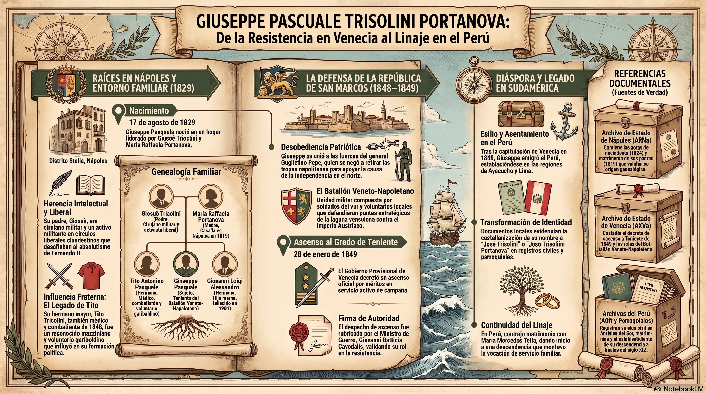

REGISTRO GENEALÓGICO · ACCESO PRIVADO
Ingresa el nombre del Tatarabuelo
De la Resistencia en Venecia al Linaje en el Perú

Nombre completo: Giuseppe Pascuale Trisolini Portanova
Nacimiento: 17 de agosto de 1829, Distrito de Stella, Nápoles
Padre: Giosuè Trisolini (n. 1784, Carovigno, Brindisi) — cirujano militar y activista liberal.
Madre: Maria Raffaela Portanova (n. 1799) — matrimonio celebrado el 24 de marzo de 1819 en la parroquia de Avvocata, Nápoles.
Hermano: Tito Antonino Pasquale Trisolini (n. 20 de diciembre de 1824) — médico, conspirador mazziniano y voluntario garibaldino.
Tras la capitulación de Venecia en agosto de 1849, Giuseppe emigró hacia el Perú, asentándose sucesivamente en Ayacucho y Lima. En los registros locales aparece bajo la forma castellanizada "Jose Trisollini Portanova".
Contrajo matrimonio con María Mercedes Tello, dando origen al linaje familiar Trisolini en territorio peruano.